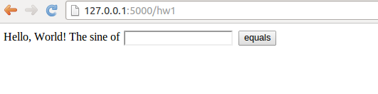

Making a Flask application
Not much code or configuration is needed to make a Flask application. Actually one short file is enough. For this file to work you need to install Flask and some corresponding packages. This is easiest performed by
Terminal> sudo pip install Flask
Terminal> sudo pip install WTForms
You can add --upgrade to upgrade a previous installation.
Programming the Flask application
The user interaction.
We want our input page to feature a text field where the user can
write the value of r, see Figure 1.
By clicking on the equals button
the corresponding s value is computed and written out the result page
seen in Figure 2.


The Python code.
Flask does not require us to use the MVC pattern so there is actually
no need to split the original program into model, view, controller,
and compute files as already explained (but it will be
done later). First we make a controller.py file where the view, the
model, and the controller parts appear within the same file.
The compute component is always in a separate file as
we like to encapsulate the computations completely from user
interfaces.
The view that the user sees is determined by
HTML templates in a subdirectory templates, and consequently
we name the template files view*.html.
The model and other parts of the view concept are just parts of
the controller.py file. The complete file is short and explained
in detail below.
from flask import Flask, render_template, request
from wtforms import Form, FloatField, validators
from compute import compute
app = Flask(__name__)
# Model
class InputForm(Form):
r = FloatField(validators=[validators.InputRequired()])
# View
@app.route('/hw1', methods=['GET', 'POST'])
def index():
form = InputForm(request.form)
if request.method == 'POST' and form.validate():
r = form.r.data
s = compute(r)
return render_template("view_output.html", form=form, s=s)
else:
return render_template("view_input.html", form=form)
if __name__ == '__main__':
app.run(debug=True)
Dissection.
The web application is the app object of class Flask, and initialized
as shown. The model is a special Flask class derived from Form
where the data are listed as static class attributes and initialized
by various form field objects from the wtforms package.
These form fields correspond to HTML forms in the input page.
For the r variable we apply FloatField since it is a floating-point
variable. A default validator, here checking that the user supplies
a real number, is automatically included.
The view part of this Python code consists of
a URL and a corresponding function to call when the URL is invoked.
The function name is here chosen to be index (corresponding to the standard
index.html page that is the main page of a URL). The
decorator @app.route('/hw1', ...) maps the URL
http://127.0.0.1:5000/hw1 to a call to index.
The methods argument must be as shown to allow the user to communicate
with the web page.
The index function first makes a form object based on the data in
the model, here class InputForm. Then there are two possibilities:
either the user has provided data in the HTML form or the user is
to be offered an input form. In the former case, request.method
equals 'POST' and we can extract the numerical value of r
from the form object, using form.r.data, call up our mathematical
computations, and make a web page with the result.
In the latter case, we make an input page as displayed in
Figure 1.
The template files.
Making a web page with Flask is conveniently done by an HTML
template. Since the output page is simplest we display the
view_output.html template first:
Hello, World! sin({{ form.r.data }})={{s}}.
Keyword arguments sent to render_template are available in the
HTML template. Here we have form and s.
With the form object we extract the value of
r in the HTML code by {{ form.r.data }}. Similarly, the value of s
is simply {{ s }}.
The HTML template for the input page is slightly more complicated as we need to use an HTML form:
<form method=post action="">
Hello, World! The sine of {{ form.r }}
<input type=submit value=equals>
</form>
Testing the application. We collect the files associated with a Flask application (often called just app) in a directory, here called hw1. All you have to do in order to run this web application is to find this directory and run
Terminal> python controller.py
* Running on http://127.0.0.1:5000/
* Restarting with reloader
Open a new window or tab in your browser and type in the URL
http://127.0.0.1:5000/hw1.
Equipping the input page with output results
Our application made two distinct pages for grabbing input from the user and presenting the result. It is often more natural to add the result to the input page. This is particularly the case in the present web application, which is a kind of calculator. Figure 3 shows what the user sees after clicking the equals button.

To let the user stay within the same page, we create a new directory
hw2.
for this modified Flask app and copy the files from the previous
hw1 directory. The idea now is to make use of just one
template, in templates/view.html:
<form method=post action="">
Hello, World! The sine of
{{( form.r )}}
<input type=submit value=equals>
{% if s != None %}
{{s}}
{% endif %}
</form>
The form is identical to what we used in view_input.html in
the hw1 directory, and the only
new thing is the output of s below the form.
The template language supports some programming with Python objects
inside {% and %} tags.
Specifically in this file, we can test on the value of s:
if it is None, we know that the computations are not performed and
s should not appear on the page, otherwise s holds the sine
value and we can write it out. Note that, contrary to plain Python,
the template language does not rely on indentation of blocks and
therefore needs an explicit end statement {% endif %} to finish
the if-test.
The generated HTML code from this template file reads
<form method=post action="">
Hello, World! The sine of
<input id="r" name="r" type="text" value="1.2">
<input type=submit value=equals>
0.932039085967
</form>
The index function of our modified application
needs adjustments since we use the same
template for the input and the output page:
# View
@app.route('/hw2', methods=['GET', 'POST'])
def index():
form = InputForm(request.form)
if request.method == 'POST' and form.validate():
r = form.r.data
s = compute(r)
else:
s = None
return render_template("view.html", form=form, s=s)
It is seen that if the user has given data, s is a float, otherwise
s is None. You are encouraged to test the app by running
Terminal> python controller.py
and loading http://127.0.0.1:5000/hw2 into your browser.
A nice little exercise is to control the formatting of the result s.
To this end, you can simply transform s to a string: s = '%.5f' % s before
sending it to render_template.
Splitting the app into model, view, and controller files
In our previous two Flask apps we have had the view displayed for the
user in a separate template file, and the computations as always in
compute.py, but everything else was placed in one file controller.py.
For illustration of the MVC concept we
may split the controller.py into two files: model.py and
controller.py. The view is in templates/view.html.
These new files are located in a
directory
hw3_flask
The contents
in the files reflect the splitting introduced in the original
scienticic hello world program in the section Application of the MVC pattern.
The model.py file now consists of the input form class:
from wtforms import Form, FloatField, validators
class InputForm(Form):
r = FloatField(validators=[validators.InputRequired()])
The file templates/view.html is as before, while controller.py contains
from flask import Flask, render_template, request
from compute import compute
app = Flask(__name__)
@app.route('/hw3', methods=['GET', 'POST'])
def index():
form = InputForm(request.form)
if request.method == 'POST' and form.validate():
r = form.r.data
s = compute(r)
else:
s = None
return render_template("view.html", form=form, s=s)
if __name__ == '__main__':
app.run(debug=True)
The statements are indentical to those in the hw2 app, only
the organization of the statement in files differ.